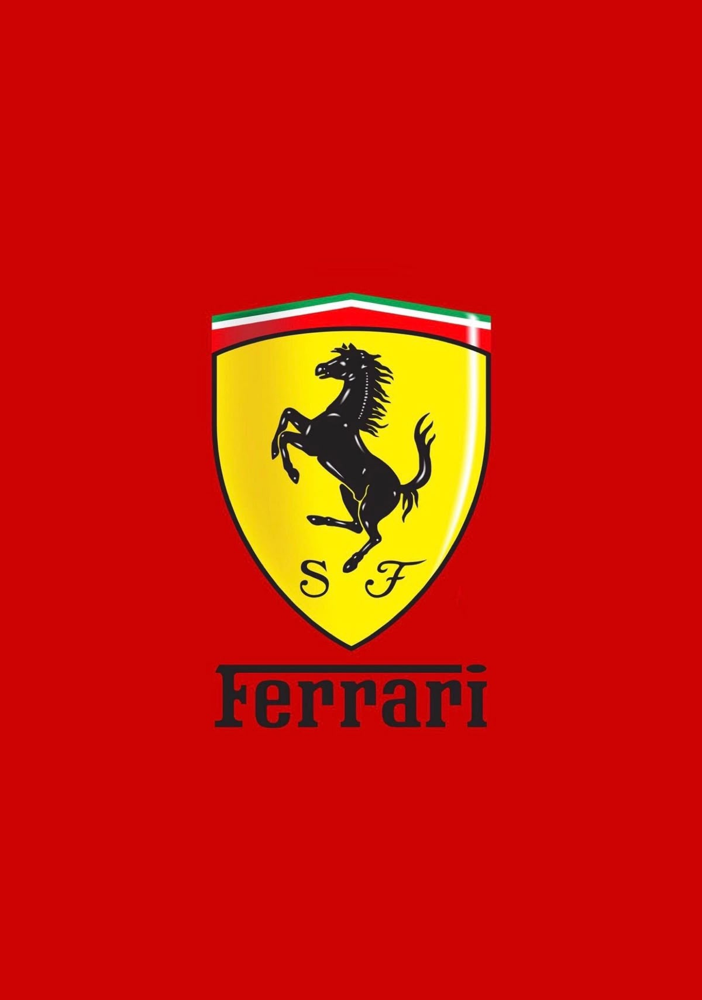
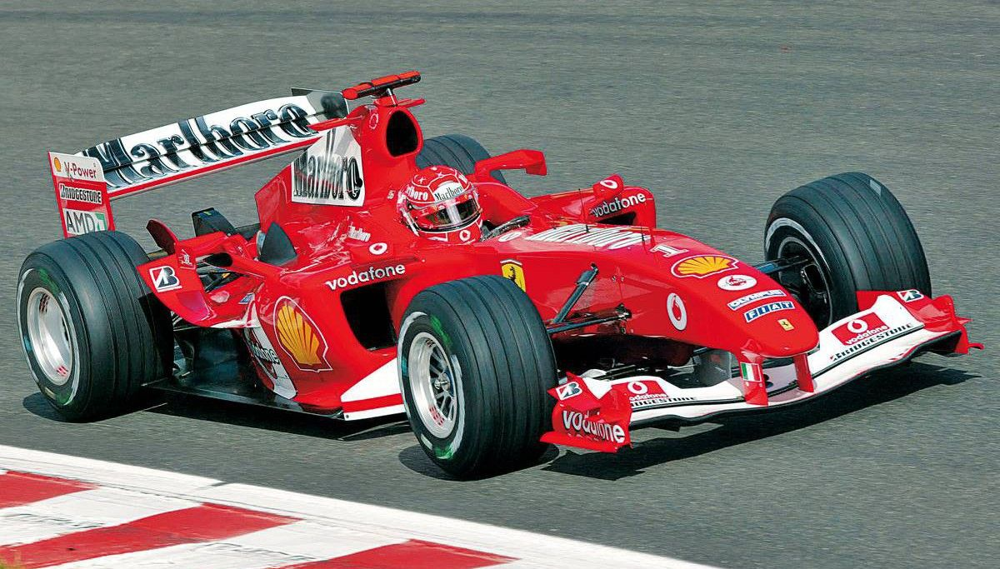
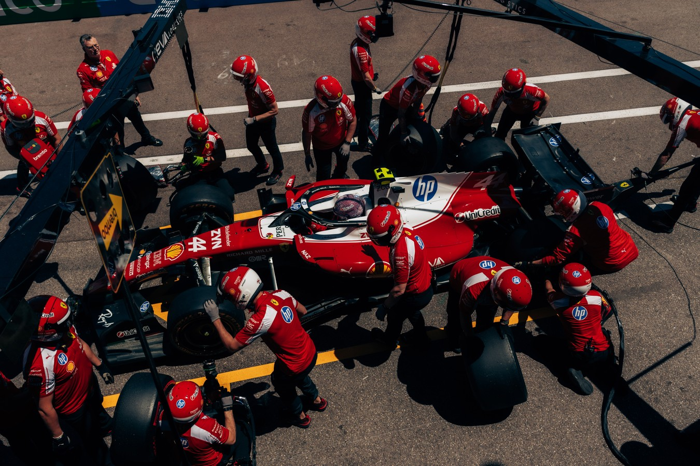
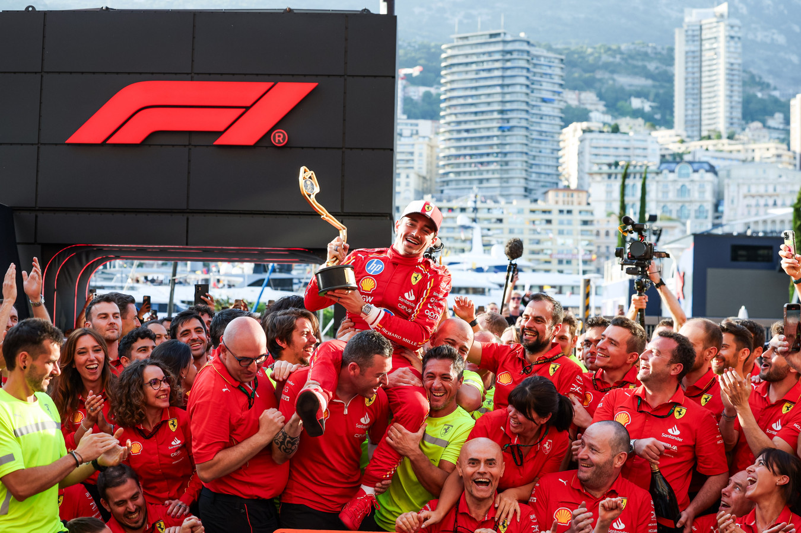
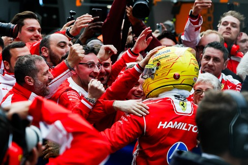

Maranello, Italy
Frédéric Vasseur
Ferrari
1950
16 Constructors'
Rosso Corsa • Yellow • Black
Ferrari is the most successful and iconic team in Formula One history.
Since the inaugural World Championship in 1950, the Scuderia has become
synonymous with passion, speed and engineering excellence.
Based in Maranello, Italy, Ferrari is the only team to have competed in
every Formula One World Championship season.
Millions of fans around the world—known as the Tifosi—support the team,
making every Ferrari race feel like a home event.
Special note for new fans from a veteran: Ferrari is famously known for it's fuck ups and hasn't won a
championship in nearly 20 years.
The highs are high and the lows are low. Keep the tissues on hand for either tears of joy or sadness(you
will need them).
Be prepared for hearbreak, drama and plenty of excitement because one thing Ferrari fans don't lack is a
perpetual sense of community!
Built for the 2026 Formula One regulations, the Ferrari SF-26 combines decades of racing heritage with modern hybrid technology, sustainable fuels and cutting-edge aerodynamics. Every surface of the car has been engineered to maximise downforce, efficiency and race pace while adapting to Formula 1's newest era.

Constructors'
Championships
Drivers'
Championships
Grand Prix
Entries
Race
Victories
Podium
Finishes
Pole
Positions
Total
Points
Total
Drivers
Scuderia Ferrari founded by Enzo Ferrari.
Competed in the inaugural Formula One World Championship.
Niki Lauda wins Ferrari's first Drivers' Championship in over a decade.
Michael Schumacher leads Ferrari to one of the most dominant eras in F1 history.
Ferrari enters Formula One's new technical era with the SF-26.




Ferrari is the only constructor to have competed in every Formula One World Championship since 1950.
Ferrari's famous logo was inspired by the emblem of Italian WWI ace Francesco Baracca.
Ferrari supporters are known worldwide as the Tifosi, creating one of the most passionate fanbases in sport.